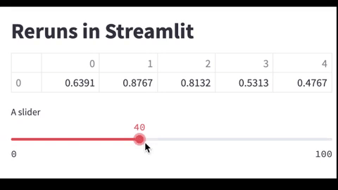

Reruns in Streamlit¶
Consider the following code:
import streamlit as st
import numpy as np
st.title("Reruns in Streamlit")
rng = np.random.default_rng()
st.write(rng.random((1,5)))
st.slider("A slider",0,100,40,1)
The random numbers and the slider have nothing to do with each other; they are completely independent. But when we change the slider, notice how the random numbers also change!

Here is the key passage from the Streamlit documentation:
Streamlit data flow
Streamlit apps have a unique data flow: any time something must be updated on the screen, Streamlit reruns your entire Python script from top to bottom.
This can happen in two situations:
Whenever you modify your app’s source code.
Whenever a user interacts with widgets in the app. For example, when dragging a slider, entering text in an input box, or clicking a button.
The above code is an example of this. As the user interacts with the slider widget, the entire app reruns, and in the process, new random numbers are generated.
Here are two possible solutions.
Use
rng = np.random.default_rng(seed = 20)so that consistent numbers are produced during every rerun. (Of course there is nothing special about the particular number 20.)Use
st.session_stateas described here.